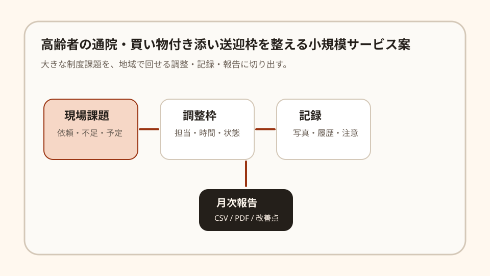

Question Note
高齢者の通院・買い物付き添い送迎枠を整える小規模サービス案

全体像
高齢者の外出支援では、病院、買い物、役所、地域活動への移動が生活の継続に直結します。課題は車を増やすことだけではなく、付き添いの必要度、待ち時間、帰り便の読みにくさを地域の少人数で調整することです。
狙いは、社会課題全体を解くことではなく、地域の生活支援団体が行う通院・買い物付き添い送迎の枠管理に絞ることです。
どの社会問題を切り出すか
| 現場課題 | 何が起きるか | 既存手段の限界 |
|---|---|---|
| 帰り時間が読めない | 病院の待ち時間で次の送迎と重なる。 | 電話予約だけでは、遅延と代替担当の調整が残らない。 |
| 付き添い度が違う | 玄関まででよい人と受付同行が必要な人が混在する。 | 一般の予約表では支援レベルを表現しにくい。 |
| 実績集計が大変 | 助成金や会費説明のための回数、距離、待機時間が後で負担になる。 | 地図アプリは移動には強いが、地域支援の報告には弱い。 |
サービス案
通院・買い物の送迎枠、付き添いレベル、待機時間、実績を1回ごとに残すミニ運行台帳です。
- 利用者、目的地、付き添い要否、帰り便見込みを登録する。
- 担当者の空き枠と車両数を見える化する。
- 待ち時間や遅延を次の担当へ共有する。
- 距離、回数、キャンセル、実費を月次集計する。
- 安全上の同乗ルールと緊急連絡先を軽く持つ。
100万円規模に抑えた市場設定
初年度は1県内の生活支援団体、社協、NPO70団体を到達可能市場とし、その中から18団体に導入する前提にします。
| 項目 | 仮定 | 結果 |
|---|---|---|
| 到達可能市場 | 1県内の生活支援団体、社協、NPO70団体 | 面談と初期設定を1人で回せる範囲 |
| 初年度導入 | 18団体 | 紹介、説明会、個別導入で獲得 |
| 月額利用料 | 4,500円 | 972,000円/年 |
| 導入支援 | 8,000円 x 7件 | 56,000円 |
| 初年度売上予想 | 合計 | 1,028,000円 |
収益モデル
- 基本: 運営団体または地域拠点ごとの月額利用料
- 追加: 初期設定代行、台帳移行、帳票テンプレート作成
- 追加: 地域ネットワーク向け導入説明会
初期は成果報酬よりも、現場の調整時間を減らす固定課金の方が読みやすいです。
必要なシステム要件と支出
| 領域 | 要件・使い道 | 年額の目安 |
|---|---|---|
| フロント | スマホで登録、状態変更、一覧確認ができるWeb画面 | 0円〜 |
| バックエンド | 利用者、依頼、在庫、担当、履歴、権限を管理 | 36,000円 |
| 通知 | メール中心、必要時だけSMSや電話確認に回す | 18,000円 |
| 帳票・記録 | CSV、PDF、月次報告、簡易監査ログ | 18,000円 |
| 運用・専門確認 | ドメイン、バックアップ、説明資料、規約・個人情報確認 | 83,000円 |
| 年間支出 | 合計 | 155,000円 |
AIを使った開発見積もり
AIを使うと、画面案、CRUD、CSV/PDF出力、テストデータ、説明文の初稿を短縮できます。一方で、現場ヒアリング、個人情報や安全面の線引き、受け入れ検証は人が責任を持つ必要があります。
| 作業 | AIで短縮できること | 目安 |
|---|---|---|
| 要件整理 | ヒアリングメモから業務フローと画面項目を整理 | 3〜5日 |
| プロトタイプ | 一覧、登録、状態管理、権限のたたき台を作成 | 1〜2週間 |
| 本実装 | CRUD、通知、帳票、テストデータを補助 | 2〜3週間 |
| 検証・修正 | テスト観点と不具合原因の洗い出し | 1週間 |
1人開発でも、初期版は4〜7週間で作れる想定です。
売上・支出・利益
売上 - 支出 = 利益
| 項目 | 金額 | 補足 |
|---|---|---|
| 売上 | 1,028,000円 | 月額4,500円 x 18団体 x 12か月 + 導入支援56,000円 |
| 支出 | 155,000円 | 予約、通知、実績CSV、保険・規約確認、説明資料 |
| 利益 | 873,000円 | 実行者の作業時間は別途。副業または小規模検証として成立する水準 |
必要人数と人材要件
この規模では、実行者1名 + 単発外注を前提にします。
- 実行者: Webアプリを実装でき、地域団体や現場担当者との面談ができる人
- 補助外注: 会計、法務、個人情報、安全確認、アクセシビリティ点検を単発依頼
- 望ましいスキル: CRUD実装、帳票設計、スマホUI、業務整理、地域連携の調整力
リスクと最初の検証
- 月額課金に見合うほど、現場の調整負荷が減るかを確認する。
- 入力項目が多すぎると紙や電話に戻るため、初期項目を絞る。
- 個人情報、安全、責任範囲を利用規約と運用説明で明確にする。
最初は3拠点、1か月だけ試し、連絡漏れ、記録漏れ、担当者の作業時間が減るかを見ます。
結論
このテーマは、社会問題全体を解く巨大サービスではなく、地域の生活支援団体が行う通院・買い物付き添い送迎の枠管理を整える方向に切ると、100万円規模でも成立しやすいです。